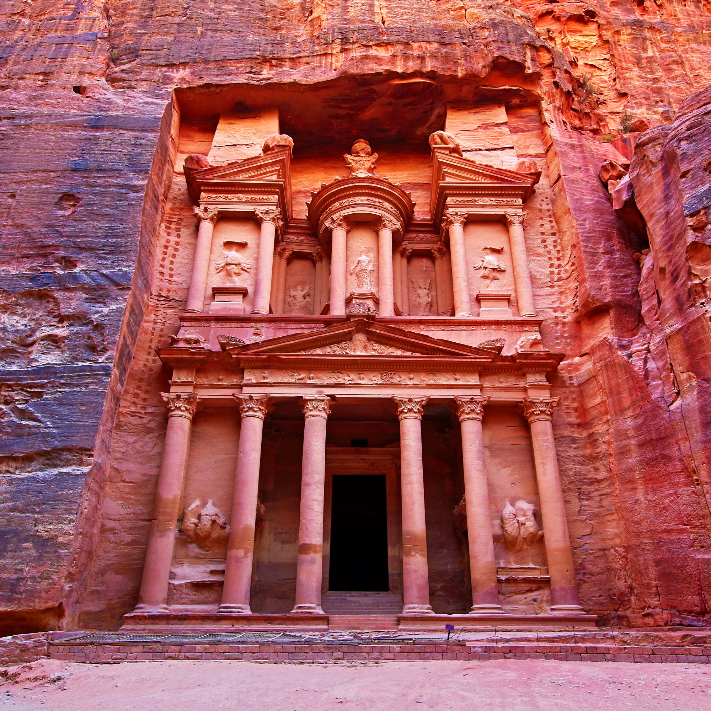

Petra (orignally known as Raqmu) is a city in southern Jordan. It's believed the city has been built as early as the 5th century BC and estabilished as the capital city of the Nabataean Kingdom in the 4th century BC. The Nabataeans were nomadic Arabs who made use of Petra's location, which was close to many trade routes and estabilished it as a major trading hub. The city has been defended from a Greek dynasty in 312 BC by the Nabataeans who were accustomed to the harsh weather and terrain and thus had an advantage over the enemy. Despite the harships, the city flourished until the 1st century AD when its famous Al-Khazneh facade was constructed and its population peaked at around 20,000 inhabitants. The city has been a UNESCO World Heritage Site since 1985.
Some of the earliest recorded farmers had settled in Beidha, a settlement just north of Petra around 2010 BC. Although the city of Petra has been founded relatively late, a sanctuary has existed there since very ancient times.
In 106 AD, The part of Arabia under the rule of Petra was absorbed into the Roman Empire and became its capital. The city continued to flourish under Roman rule for a couple of centuries despite the native dynasty coming to an end.
In 363, an earthquake destroyed many buildings and damaged the vital water management system. In 551, another earthquake weakened the city. When the Arabs conquered the region in year 663, the last inhabitants abandoned Petra.
It is fascinating that so many centuries later, in 2016, archaeologists still discover previously unknown sections of the city.